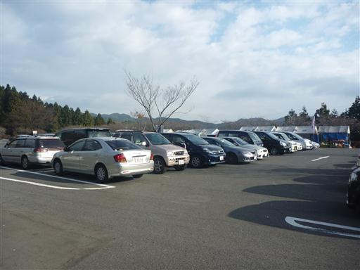
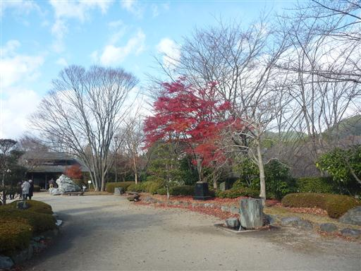
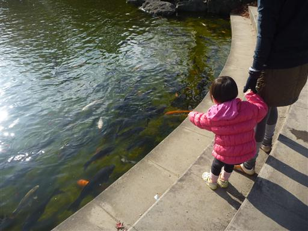
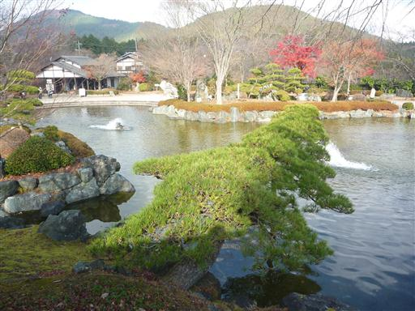
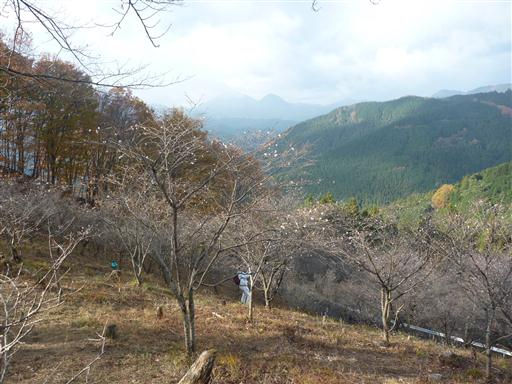
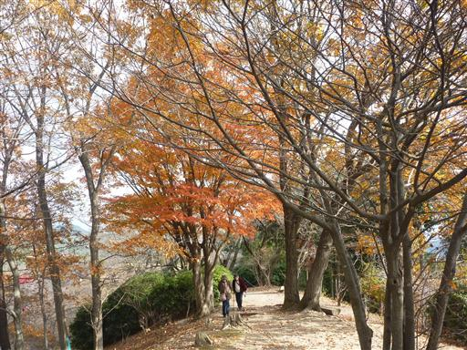
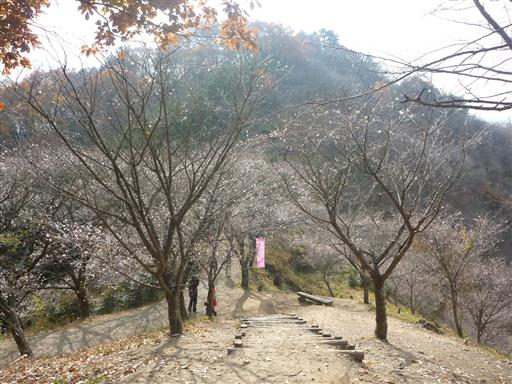
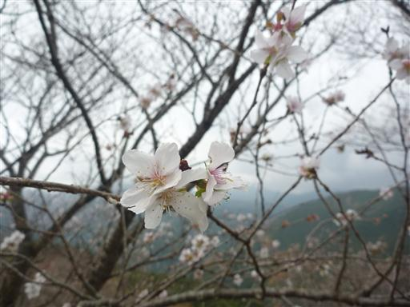
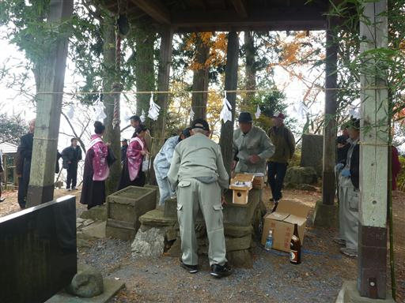
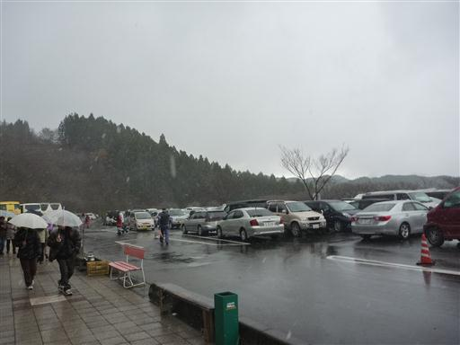

桜山
| 日付 | 2012年12月1日（土） |
|---|---|
| 山域 | 西上州 |
| メンバー | 家族（妻、長女・1歳） |
| 山行形態 | 子連れ日帰り |
| アクセス | 車 |
| ルート (Map) | 第一駐車場 (9:19) - (10:12) 桜山 - (11:18) 第一駐車場 |
冬桜で有名な群馬県の桜山に行ってみることにする。
山頂付近は桜山公園として整備されていて
冬桜が咲く季節は観光客で賑わう。
下から登る登山道もあるが、山頂近くの駐車場まで車で登ることにする。
桜山公園の第一駐車場に到着。
冬桜が咲く季節は駐車料金を取られるのだが、今年は開花が遅いらしく
まだほとんど花が咲いていないため無料で駐車することができた。

駐車場の付近は庭園風に整備されている。

庭園の真中にある池にはたくさんのコイが泳いでいる。

池に突き出した松の木。

桜山山頂に向かって整備された遊歩道を歩いていく。
桜の花はチラホラと咲いているが数は少ない。
背後に見える2つのコブは御荷鉾山だ。

桜の花は少ないが紅葉は今が盛り。この山は桜と紅葉が同時に楽しめる。

目の前に桜山が見えてきた。この辺りは幾分咲いている花が多い。

拡大して見てみると確かに桜の花の形をしている。

駐車場から山頂まではわずかな距離、わずかな登りなのだが、
子供は歩くのを嫌がったため仕方なくおんぶで登っていく。

桜山山頂に到着。標高591m。
山頂では何やらイベントの準備が行われている。

どこかに腰を下ろして昼食をとろうと考えていたが
途中でみぞれが降ってきたため車に戻ることにする。

駐車場に到着。大駐車場は車でいっぱいだ。
しかし、辺りは雲に覆われ完全な吹雪になってしまった。
車の中で昼食をとって帰ることにする。
桜の開花、天気ともに誤算だらけのお出かけとなってしまった。

他の山行記録